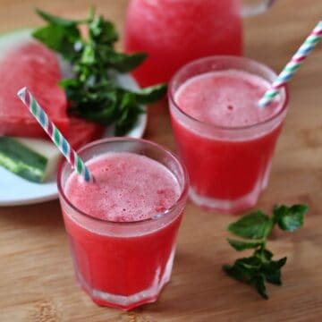
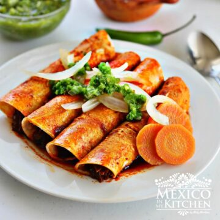
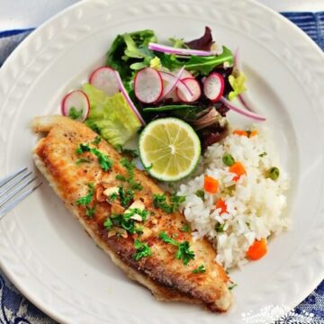

Tacos
Los tacos son una popular receta del país mexicano. Consiste en carne, generalmente de ternera (o res como lo llaman allí) o de pollo, cocinada junto a tomate y después introducida dentro de una tortilla de maíz o trigo.
Finalmente se adereza con pico de gallo, una salsa típica del país. Un plato con mucha personalidad y que sin duda sabe a méxico.
Aquí, lo haremos con carne picada aunque, en realidad se hace con trozos de carne cortadas en tiras, cocinada durante dos horas o más. Así que se puede decir que aunque se parezca, no es 100% mexicana. Pero para acelerar el proceso que, todos tenemos unas vidas muy ajetreadas ¡haremos una versión mucho más rápida e igualmente sabrosa!
Recetas de tacos

Receta del día
Recetas de...


